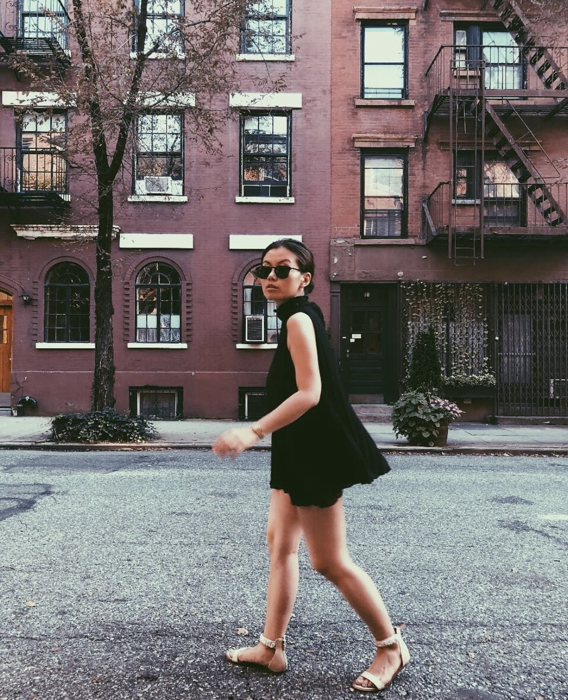

About Jennifer
I'm a UI/UX designer with over five years of experience creating intuitive digital experiences for government and enterprise products. I enjoy simplifying complex problems through thoughtful, user-centered design and am passionate about building products that are both functional and impactful.
Background
Originally from Brooklyn, New York, I transitioned from sales and technology into UX design after discovering my passion for designing for people. I hold a Master's in Media, Culture, and Communication from NYU Steinhardt and a bachelor's degree in Political Science, bringing a balance of strategy, creativity, and empathy to every project.
Experience
- UX Design2021 – Present
- Sales / Real EstatePrior to 2021
Interests
Outside of design, you'll usually find me planning my next trip to somewhere with clear water and quiet beaches. I enjoy spending time in nature, discovering great dairy-free and meat-free food, watching classic '80s sci-fi, horror, and fantasy films, and exploring astrology. I'm also a big fan of good conversations, lots of laughter, and meeting fellow water signs.
